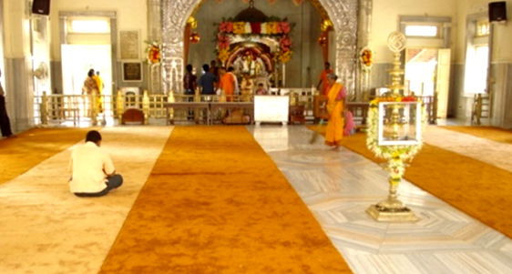
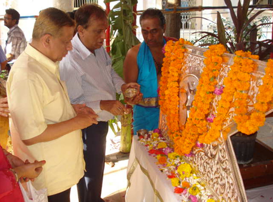
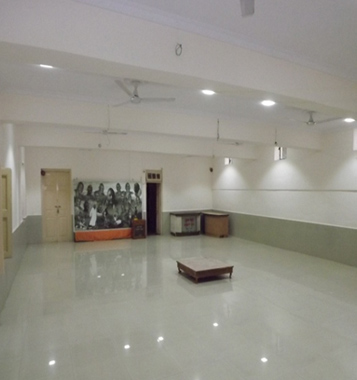
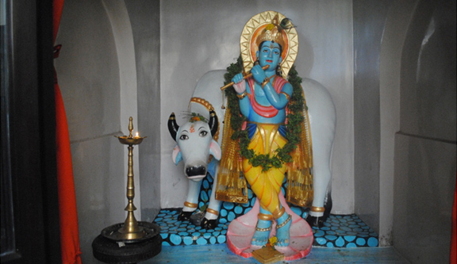
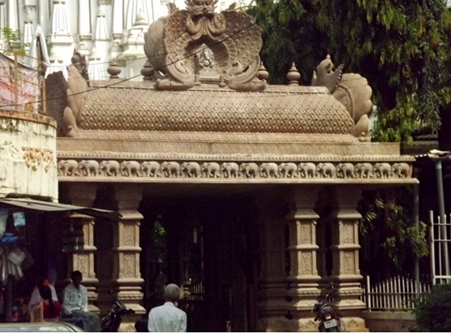
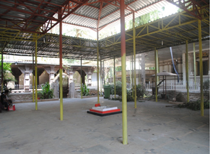
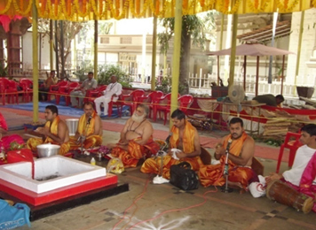
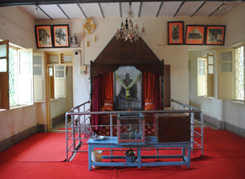
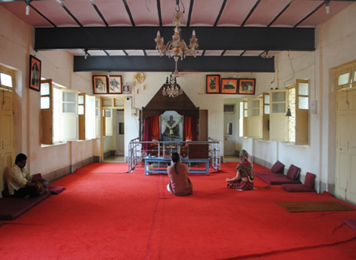
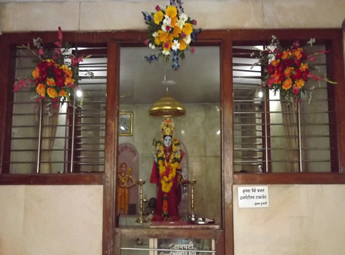

The temple is beautiful - so tranquil and serene. As soon as you enter the temple you feel the world slipping away and calm and serenity descending on you. The focus in the temple is Bhagwan Nityananda as most people visiting temple fixedly gaze at the murti and remain immersed within themselves. The flowers, coconuts offered are usually returned to the devotees after these have been blessed at Bhagwan's feet.
Ganeshpuri is a holy land since ancient times. Sage Varistha, Lord Rama's Guru, held a great yagna here and as per belief at that time installed Lord Ganesha in a temple here. Great yogis practiced penance here in the surroundings of mountain Mandagni, which has been mentioned in many scriptures. River Tejasa flows near by. Bhagwan Nityanand chose this ancient centre of great spiritual energy to stay & revive it's immortal glory. Bhagwan Nityanand came in 1937 and stayed near the hot waterspring of Bhimeshwar Mahadev temple. This is the place where His Samadhi temple is now built. When devotees multiplied, He shifted to a building named Kailash Niwas. He took Mahasamadhi in another building close by named Banglorewala building. Worship is held daily in both buildings which are maintained by the Sanstha. In a very natural manner the forest abode of Bhagwan Nityanand has changed it's shape in to a busy town.
Samadhi Mandir Complex
The main objective of the Trustees is to safe guard the inner sanctum and the serenity of and around the vicinity of the Temple complex. For this the following has been done:
To avoid the natural wear and tear of the statue of Bhagwan Nityanand the Trustees have gone in for an elaborate arrangement of installment of air conditioner in the inner sanctum.
A wall to wall carpet has been placed in the Hall of the temple

Silver Flag has been installed at the temple dome. Donated by a Devotee.

 |
 |
| Temple Door | Bhajan Hall |
Behind the Samadhi Shrine there is Lord Krishna’s Temple which was inspired by Bhagwan Nityananda.

Temple Entrance

The Yagna Mandap
The Yagna Mandap work started last year and will take a year to complete. The roof has been completed and the grand gate at the entrance has been made. The Yagna Mandap (including the Navagraha) has been fully covered up and all the Yagna Puja's and Havans including Satyanarayan puja are performed from time to time.
|  |  |
Meditation Hall inside Bangalorewala Building
|  |  |
Bhadrakali Devi Temple
